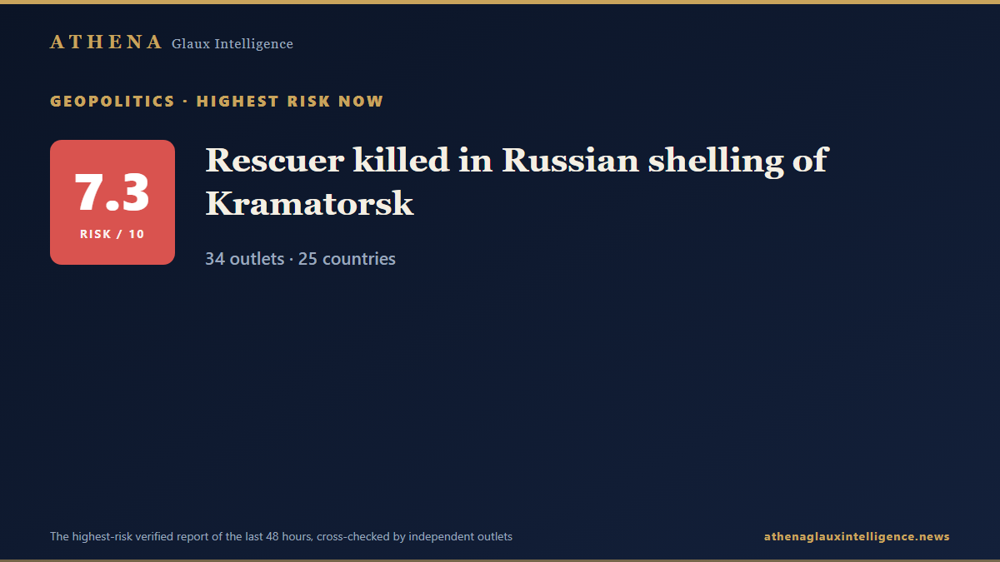
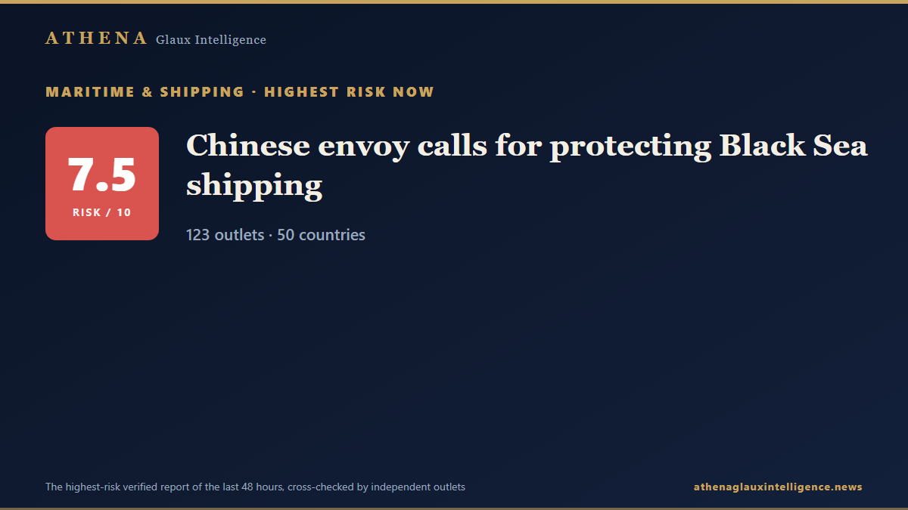
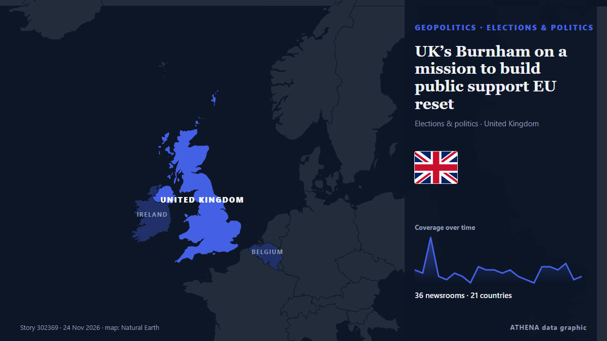

Κίνδυνος 7.3Αυξημένος
ATHENA Glaux Intelligence — Παγκόσμια ειδησεογραφική ανάλυση — κάθε αριθμός εξηγημένος
Γεωπολιτική
Όλη η Γεωπολιτική >Υψηλότερος κίνδυνος τώρα

Αυξανόμενος κίνδυνοςΑύξηση τις τελευταίες 24 ώρες
Ναυτιλία & ναυσιπλοϊα
Γραφείο Ναυτιλίας >Υψηλότερος κίνδυνος τώρα
Κίνδυνος 7.5Αυξημένος
Chinese envoy calls for protecting Black Sea shipping
Δείτε τα στοιχεία ›
Αυξανόμενος κίνδυνοςΑύξηση τις τελευταίες 24 ώρες
- Houthis hit Riyadh’s tallest tower, 11 wounded, Saudi Civil defense saysΚίνδυνος 1.5 → 5.3
Κάθε είδηση, ελεγμένη σε πολλές χώρες.
Το ATHENA Glaux παρακολουθεί 744 ειδησεογραφικά μέσα σε όλο τον κόσμο. Μια είδηση γίνεται επαληθευμένο γεγονός μόνο όταν την αναφέρουν ανεξάρτητα μέσα. Κάθε γεγονός δείχνει ποιος το ανέφερε πρώτος και έναν βαθμό κινδύνου με τους λόγους του.
1.488γεγονότα σε 24 ώρες
744μέσα που παρακολουθούμε
43λεπτά ανάμεσα στις ενημερώσεις
Σεισμός ή πλημμύρα κοντά σας αυτή την εβδομάδα;
Γράψτε την πόλη σας και δείτε σεισμούς, πλημμύρες, καταιγίδες και επίσημες προειδοποιήσεις κοντά της, με λίστα κιτ έκτακτης ανάγκης 72 ωρών. Δωρεάν, χωρίς εγγραφή, και η περιοχή σας μένει στη συσκευή σας.
Αναφορές έρχονται από ανεξάρτητα μέσα — όταν δύο συναντηθούν στην ίδια ιστορία, γίνεται επιβεβαιωμένο γεγονός.
Πώς ελέγχει το ATHENA μια είδηση
- ΣυλλογήΟι αναφορές φτάνουν από ανεξάρτητα μέσα σε πολλές χώρες.
- ΑντιστοίχισηΌταν δύο μέσα συναντιούνται στην ίδια είδηση, γίνεται επαληθευμένο γεγονός.
- ΕξήγησηΚάθε γεγονός δείχνει ποιος ήταν πρώτος, πόσο εξαπλώθηκε και γιατί ο κίνδυνος είναι αυτός.
Παγκόσμια προοπτική κινδύνου
Εβδομαδιαίες και μηνιαίες επισκοπήσεις: τα γεγονότα υψηλότερου κινδύνου, οι τάσεις ανά τομέα και περιοχή και τι να παρακολουθήσετε.
Διαβάστε την προοπτική ›Ημερήσια ενημέρωση
Τα δέκα σημαντικότερα γεγονότα της ημέρας στον κόσμο, οι αυξανόμενοι κίνδυνοι και τα νέα γεγονότα, με κάθε αριθμό εξηγημένο.
Ανοίξτε τη σημερινή ενημέρωση ›
ΓεωπολιτικήUK’s Burnham on a mission to build public support EU reset
While he insists it would be unthinkable to rejoin the bloc without another referendum, British PM Andy Burnham has nevertheless reopened the debate over Brexit. από France 24 English
6.4Σημασία
4.6Κίνδυνος · αυξημένος
87%Βεβαιότητα
Οι τίτλοι των ειδήσεων παρουσιάζονται στα αγγλικά, όπως δημοσιεύτηκαν.
Τεχνολογία & Κυβερνοασφάλεια
Nvidia, Anthropic and other AI stocks drag US market back down
The weakness came amid a wider sell-off in regional equity markets, with Japan’s Nikkei 225 down 2% and South Korea’s Kospi losing 2.6%. από Cointelegraph
Τεχνολογία & Κυβερνοασφάλεια
Microsoft Declares ‘Code Red’ After Historic 24-Hour Outage
Internal memos show Microsoft wants future outages fixed worldwide within an hour after a November failure knocked out Outlook and Teams globally. από To Vima (English)
Χορηγούμενο
Cybernetics and Artificial Intelligence Lab Welcome to the Cybernetics and Artificial Intelligence Laboratory, established at the Department of Business Administration of the National and Kapodistrian University of Athens. The lab is headed by Professor Dimitrios Thomakos. The lab aims to do research that can be published in top venues. Our research uses tools and methods of Artificial Intelligence, and lies in the following areas: - Forecasting - Decision making - Cyber security - Finance We are always looking forward to collaborating with exceptional students!
Μάθετε περισσότερα – Cybernetics and Artificial Intelligence LabΠλοία στα θαλάσσια περάσματα τώρα
Ζωντανές μετρήσεις AIS. Πατήστε ή περάστε πάνω από μια μπάρα για λεπτομέρειες.
Τελευταίες αναφορές
End Western ‘irresolution’ to show Putin he can’t win in Ukraine, says Johnson
Senior member of Turkish ruling party resigns amid fund probe
International News: Armed men seize supermarket and take at least 25 hostages in Colombia
Ukraine Needs at Least €115B in 2027 to Sustain War Effort, Zelensky Says
Insiders say Anthropic, OpenAI struggle to contain unreleased AI models: Axios
Central Bank launches electronic payment system to replace manual cheques
Uzbekistan, Jordan agree to elevate relations to strategic partnership
Γεωπολιτική
Hungarian PM says he hosted refugees from Zakarpattia Oblast
Prime Minister Péter Magyar says Hungary has provided refuge to tens of thousands of Ukrainians since Russia's full-scale invasion, including many ethnic Hungarians. από Ukrainska Pravda (English)
Γεωπολιτική
Sheikh Hasina seeks to return to Bangladesh on December 16 on state carrier
Minister terms ex-PM 'fugitive terrorist', says she can only return by extradition in handcuffs, under surveillance. από Express Tribune
Γεωπολιτική
UK’s MI5 warns local defense firms of Russian sabotage risk
The alert urges industry to respond immediately and “reduce opportunities for hostile actors to identify your organisation or people as targets, conduct hostile reconnaissance, and attack people… από Breaking Defense
Γεωπολιτική, Πολιτική & Ασφάλεια
Περισσότερα ›Πόλεμοι & συγκρούσεις
2 Indians Among 11 Injured As Houthis Target Tower In Saudi's Finance Hub
The Indian embassy in Saudi Arabia also confirmed that two Indian nationals sustained injuries in the attack. από NDTV
- Διπλωματία & σύνοδοι
Trump says trade deal reached between the U.S. and the Philippines
- Πόλεμοι & συγκρούσεις
NATO to Deploy Early-Warning Aircraft to Poland Following Russian Missile Incidents
- Πόλεμοι & συγκρούσεις
Moscow accuses Estonia of hostile actions on ‘verge of triggering open war’
- Διπλωματία & σύνοδοι
S. Korean won climbs against U.S. dollar on foreign inflows
Οικονομία, Χρηματοοικονομικά & Αγορές
Περισσότερα ›Απασχόληση & μισθοί
Bangladesh raises garment workers’ minimum wage by 36% to ₹12,865 after weeks of protests: What we know
The garment industry employs over 4 million people and accounts for more than 80% of Bangladesh's export earnings. από Livemint
- Μετοχές, ομόλογα & αγορές
Compass exit should spur London to beef up its bench
- Εμπορεύματα & αναταραχή αγορών
Oil prices exceed $92 on global commodity markets
- Πληθωρισμός & επιτόκια
Australian Dollar reclaims 0.6600 before crucial RBA inflation test
- Πληθωρισμός & επιτόκια
Gold edges up on bargain buying after sell-off, US inflation data awaited
Εμπόριο, Βιομηχανία & Υποδομές
Περισσότερα ›Δασμοί & έλεγχοι εξαγωγών
Trump set to unveil new set of tariffs on India, China, EU, 13 other trade partners
Trade representative expected to unveil probe results as soon as this week, according to reports. από Anadolu Agency (English)
- Αερομεταφορές, σιδηρόδρομος & οδικές
China Southern Airlines unit to buy 50 Boeing 737-8 planes
- Δασμοί & έλεγχοι εξαγωγών
US poised to unveil new tariffs targeting S. Korea, 15 other trading partners
- Αερομεταφορές, σιδηρόδρομος & οδικές
Palace denies final deal to buy 100% of US food, energy supplies
- Εμπόριο & εμπορικές συμφωνίες
DR Congo halts cobalt exports again amid drop in prices
Ενέργεια, Πόροι & Περιβάλλον
Περισσότερα ›Κλίμα & κλιματική πολιτική
Forum Chair backs Australia’s COP31 role as Albanese defends conference spending
Australian Prime Minister Anthony Albanese has defended the cost of hosting and participating in COP31, saying climate action is a matter of Australia's national interest, regional security and its… από Post-Courier (PNG)
- Ακραία καιρικά & φυσικές καταστροφές
England logged record 5,258 heat-linked deaths this summer: health agency
- Πετρέλαιο & φυσικό αέριο
Iraq PM sacks senior officials over oil smuggling scandal
- Πετρέλαιο & φυσικό αέριο
Iraq targets oil smugglers, orders Kurdish oilfield takeover
- Πετρέλαιο & φυσικό αέριο
The US Army will be detonating a 5-ton stockpile of lead azide in Iowa. Here's what to know
Τεχνολογία, ΤΝ & Κυβερνοασφάλεια
Περισσότερα ›Διάστημα & δορυφόροι
China to launch Shenzhou-24 crewed spaceship on Nov. 25
China to launch Shenzhou-24 crewed spacecraft on November 25. από CGTN (China)
- Τεχνητή νοημοσύνη
AI consumes less water per dollar spent than almond milk or golf: Report
- Επεξεργαστές & υπολογιστική
Op-ed: Trump’s Nvidia board intervention put a price on national security. Our adversaries will take note
- Διάστημα & δορυφόροι
Shenzhou-24 astronauts share preparation for spaceflight mission
- Επεξεργαστές & υπολογιστική
US Blacklists Megaspeed Cloud Company Linked to Nvidia Scandal
Επιχειρήσεις, Εταιρείες & Επενδύσεις
Περισσότερα ›Πτωχεύσεις & αναδιαρθρώσεις
Seatrium to Cut 2% of Singapore Workforce in Yard Shake-Up
Singapore-based offshore and marine engineering group Seatrium will reduce its Singapore workforce by approximately 2% as part of a restructuring program aimed at… από Offshore Engineer
- Πτωχεύσεις & αναδιαρθρώσεις
Trump administration sued over removal of slavery exhibit in Philadelphia
- Εταιρική στρατηγική
Utah drops charges against Kalshi after company halts operations there
- Επενδύσεις
German President Steinmeier to open major German-African Business Summit in Accra today
- Κλάδοι & εταιρικοί κίνδυνοι
Provinces unanimously agree on implementation of sugar deregulation policy
Δυστυχήματα & έκτακτες ανάγκες
Περισσότερα ›Δυστυχήματα & έκτακτες ανάγκες
Bristol City 1-1 Wrexham recap: Reaction after Cam Pring fires Robins to draw at Ashton Gate
Live updates from Ashton Gate, where Michael Skubala and Bristol City host Wrexham in the Championship (7:45pm kick-off) από Bristol Post
- Δυστυχήματα & έκτακτες ανάγκες
Ras Al Khaimah bus-truck collision kills 13, injures 14
- Δυστυχήματα & έκτακτες ανάγκες
Mudenda calls for year-round fight against gender-based violence beyond 16 Days of Activism
- Δυστυχήματα & έκτακτες ανάγκες
Police investigating whether Titans’ Jaylen Harrell assaulted driver before Florida crash
- Δυστυχήματα & έκτακτες ανάγκες
Six killed, 10 injured in Hanoi eatery blast
Τρεις τρόποι να διαβάσετε σήμερα
Ξεκινήστε από αυτόν που ταιριάζει στον χρόνο σαςΕπαληθευμένα γεγονότα
Κατά σειρά έκτασης της κάλυψης
- After Ensuring His Nvidia Comeback, Trump Says He May Pardon Jensen Huang184 μέσα · 56 χώρεςΚίνδυνος 4.3
- Two more oil tankers explode in Strait of Hormuz unsafe route88 μέσα · 33 χώρεςΚίνδυνος 4.9
- Alice Huang, woman at the heart of Nvidia scandal, kept in contact with China’s top spy agency for over a year73 μέσα · 29 χώρεςΚίνδυνος 3.3
- Houthi Attack on Skyscraper in Saudi Capital Wounds 11, Officials Say52 μέσα · 29 χώρεςΚίνδυνος 4.1
- Libya's Government of National Unity denies prior deal with Ukraine over Benghazi attacks49 μέσα · 25 χώρεςΚίνδυνος 6.6
Γραφείο Αξιολόγησης
Κάντε μια ερώτηση και διαβάστε τεκμηριωμένη αξιολόγηση μιας βασικής είδησης, μαζί με το τι θα την διέψευδε.
Ανοίξτε το Γραφείο Αξιολόγησης ›Η σημερινή εικόνα
| 08:00 | 328 |
|---|---|
| 09:00 | 749 |
| 10:00 | 464 |
| 11:00 | 426 |
| 12:00 | 722 |
| 13:00 | 651 |
| 14:00 | 656 |
| 15:00 | 539 |
| 16:00 | 347 |
| 17:00 | 440 |
| 18:00 | 506 |
| 19:00 | 822 |
| 20:00 | 850 |
| 21:00 | 1005 |
| 22:00 | 346 |
| 23:00 | 524 |
| 00:00 | 377 |
| 01:00 | 482 |
| 02:00 | 374 |
| 03:00 | 507 |
| 04:00 | 367 |
| 05:00 | 252 |
| 06:00 | 477 |
| 07:00 | 262 |
Κίνδυνος των σημερινών γεγονότων
Γεωπολιτική74Οικονομία & Αγορές35Επιχειρήσεις35Τεχνολογία & Κυβερνοασφάλεια34Εμπόριο & Βιομηχανία32Ενέργεια & Περιβάλλον28Ναυτιλία11
Αναδυόμενα σήματα
- Απότομη αύξηση · Ενεργό τώραCourt of Arbitration for Sport
- Απότομη αύξηση · Ενεργό τώραShenzhou
- Απότομη αύξηση · Ενεργό τώραHuawei
- Απότομη αύξηση · Ενεργό τώραSAD
- Απότομη αύξηση · Ενεργό τώραKurdistan
Επίσημες προειδοποιήσεις
- M 6.5 - Vanuatu regionM6.5 · USGS ·
- M 5.9 - 238 km SW of Yanglong, ChinaM5.9 · PAGER yellow · USGS ·
Μείνετε ενημερωμένοι
ATHENA Weekly Risk Picture
Οι μεγαλύτεροι γεωπολιτικοί, οικονομικοί και ναυτιλιακοί κίνδυνοι της εβδομάδας, διασταυρωμένοι και βαθμολογημένοι.
Κάθε Παρασκευή στις 08:00 ώρα Ελλάδας · δωρεάν · στα αγγλικά
Δωρεάν εγγραφήΤο ATHENA στο Telegram
Οι ειδήσεις τη στιγμή που δημοσιεύονται: έκτακτα γεγονότα με κίνδυνο 6 ή περισσότερο, ωριαία σύνοψη, ενημερώσεις κινδύνου και η ημερήσια ενημέρωση στις 10:00.
Δωρεάν · αναρτήσεις στα αγγλικά · αποχωρείτε όποτε θέλετε
Είσοδος στο κανάλιΤην εγγραφή τη διαχειρίζεται η beehiiv με διπλή επιβεβαίωση: τίποτα από όσα πληκτρολογείτε δεν αποστέλλεται στο ATHENA, και κάθε τεύχος έχει σύνδεσμο διαγραφής.
Παρακολούθηση κινδύνων
Περισσότερα ›Στενά του ΟρμούζΚίνδυνος 7.410 νέα αυτή την εβδομάδα · μείωση από 27 την προηγούμενη εβδομάδαΕρυθρά ΘάλασσαΚίνδυνος 6.622 νέα αυτή την εβδομάδα · μείωση από 48 την προηγούμενη εβδομάδαΕλληνοτουρκικάΚίνδυνος 3.76 νέα αυτή την εβδομάδα · περίπου όσα και την προηγούμενη εβδομάδαΚύπροςΚίνδυνος 5.013 νέα αυτή την εβδομάδα · μείωση από 18 την προηγούμενη εβδομάδαΚυρώσεις κατά της ΡωσίαςΚίνδυνος 6.516 νέα αυτή την εβδομάδα · περίπου όσα και την προηγούμενη εβδομάδαΠόλεμος στην ΟυκρανίαΚίνδυνος 7.5227 νέα αυτή την εβδομάδα · μείωση από 269 την προηγούμενη εβδομάδαΜέση Ανατολή: Ισραήλ – ΓάζαΚίνδυνος 6.875 νέα αυτή την εβδομάδα · μείωση από 90 την προηγούμενη εβδομάδαΤαϊβάνΚίνδυνος 2.711 νέα αυτή την εβδομάδα · μείωση από 14 την προηγούμενη εβδομάδαΠετρέλαιο και φυσικό αέριοΚίνδυνος 3.927 νέα αυτή την εβδομάδα · μείωση από 39 την προηγούμενη εβδομάδαΔιώρυγα του ΣουέζΚίνδυνος 0.00 νέα αυτή την εβδομάδα · μείωση από 3 την προηγούμενη εβδομάδαΣτενά του ΒοσπόρουΚίνδυνος 0.00 νέα αυτή την εβδομάδαΔιώρυγα του ΠαναμάΚίνδυνος 0.00 νέα αυτή την εβδομάδαΣκιώδης στόλοςΚίνδυνος 0.01 νέα αυτή την εβδομάδα · μείωση από 3 την προηγούμενη εβδομάδαΝαυσιπλοΐα στη Μαύρη ΘάλασσαΚίνδυνος 7.52 νέα αυτή την εβδομάδα · μείωση από 7 την προηγούμενη εβδομάδαΚεντρικές τράπεζες και επιτόκιαΚίνδυνος 4.239 νέα αυτή την εβδομάδα · μείωση από 47 την προηγούμενη εβδομάδαΕλληνική οικονομίαΚίνδυνος 0.89 νέα αυτή την εβδομάδα · αύξηση από 6 την προηγούμενη εβδομάδαΕνέργεια στην Ανατολική ΜεσόγειοΚίνδυνος 0.01 νέα αυτή την εβδομάδα · μείωση από 4 την προηγούμενη εβδομάδαΒαλκάνιαΚίνδυνος 4.916 νέα αυτή την εβδομάδα · μείωση από 24 την προηγούμενη εβδομάδαΜεταναστευτικό στη ΜεσόγειοΚίνδυνος 0.00 νέα αυτή την εβδομάδα · μείωση από 3 την προηγούμενη εβδομάδα
Παγκόσμιοι κίνδυνοι — εβδομάδα 48, 2026 (23–29 Νοε) ›
Ανά τον κόσμο
Μέση Ανατολή & Βόρεια ΑφρικήTrump says Hormuz oil shipments exceed prewar levels
58 γεγονότα
Βόρεια ΑμερικήAfter Ensuring His Nvidia Comeback, Trump Says He May Pardon Jensen Huang
58 γεγονότα
ΕυρώπηUK’s Burnham on a mission to build public support EU reset
57 γεγονότα
Νοτιοανατολική ΑσίαVietnam Embassy celebrates Vietnamese Culture Day in Phnom Penh
55 γεγονότα
Νότια ΑσίαSheikh Hasina seeks to return to Bangladesh on December 16 on state carrier
53 γεγονότα
Ρωσία & ΕυρασίαEstonia to close border with Russia for at least six months
48 γεγονότα
Ανατολική ΑσίαS. Korean won climbs against U.S. dollar on foreign inflows
44 γεγονότα
Υποσαχάρια ΑφρικήCOP31 ends in failure as countries split over fossil fuels, climate finance
41 γεγονότα
Λατινική Αμερική & ΚαραϊβικήChina's Huawei convicted in sprawling US criminal trial over Iran business
24 γεγονότα